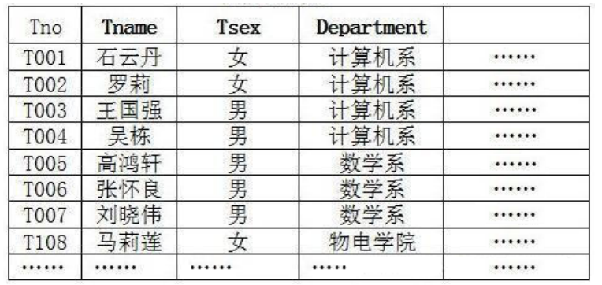

1. 数据库功能
持久化(persistence)：把数据保存到可掉电式存储设备中以供之后使用。大多数情况下，特别是企业级应用，数据持久化意味着将内存中的数据保存到硬盘上加以”固化”，而持久化的实现过程大多 通过各种关系数据库来完成。
持久化的主要作用是将内存中的数据存储在关系型数据库中，当然也可以存储在磁盘文件、XML数 据文件中。
2.数据库与数据库管理系统
2.1 数据库的相关概念
| 概念 | 说明 |
|---|---|
| DB：数据库（Database） | 即存储数据的“仓库”，其本质是一个文件系统。它保存了一系列有组织的数据。 |
| DBMS：数据库管理系统（Database Management System） | 是一种操纵和管理数据库的大型软件，用于建立、使用和维护数据库，对数据库进行统一管理和控 制。用户通过数据库管理系统访问数据库中表内的数据。 |
| SQL：结构化查询语言（Structured Query Language） | 专门用来与数据库通信的语言。 |
2.2 数据库与数据库管理系统的关系
数据库管理系统(DBMS)可以管理多个数据库，一般开发人员会针对每一个应用创建一个数据库。为保存 应用中实体的数据，一般会在数据库创建多个表，以保存程序中实体用户的数据。 数据库管理系统、数据库和表的关系如图所示：
2.3 常见的数据库管理系统排名(DBMS)
目前互联网上常见的数据库管理软件有Oracle、MySQL、MS SQL Server、DB2、PostgreSQL、Access、 Sybase、Informix这几种。以下是2021年DB-Engines Ranking 对各数据库受欢迎程度进行调查后的统计结 果：（查看数据库最新排名: https://db-engines.com/en/ranking）
2.4 常见的数据库介绍
Oracle
1979 年，Oracle 2 诞生，它是第一个商用的 RDBMS（关系型数据库管理系统）。随着 Oracle 软件的名气 越来越大，公司也改名叫 Oracle 公司。 2007年，总计85亿美金收购BEA Systems。 2009年，总计74亿美金收购SUN。此前的2008年，SUN以10亿美金收购MySQL。意味着Oracle 同时拥有了 MySQL 的管理权，至此 Oracle 在数据库领域中成为绝对的领导者。 2013年，甲骨文超越IBM，成为继Microsoft后全球第二大软件公司。 如今 Oracle 的年收入达到了 400 亿美金，足以证明商用（收费）数据库软件的价值。
SQL Server SQL Server
SQL Server SQL Server 是微软开发的大型商业数据库，诞生于 1989 年。C#、.net等语言常使用，与WinNT完全集 成，也可以很好地与Microsoft BackOffice产品集成。DB2
IBM公司的数据库产品,收费的。常应用在银行系统中。
PostgreSQL
PostgreSQL 的稳定性极强，最符合SQL标准，开放源码，具备商业级DBMS质量。PG对数据量大的文本以 及SQL处理较快。
SyBase
已经淡出历史舞台。提供了一个非常专业数据建模的工具PowerDesigner。
SQLite
嵌入式的小型数据库，应用在手机端。 零配置，SQlite3不用安装，不用配置，不用启动，关闭或者配置 数据库实例。当系统崩溃后不用做任何恢复操作，再下次使用数据库的时候自动恢复。
informix
IBM公司出品，取自Information 和Unix的结合，它是第一个被移植到Linux上的商业数据库产品。仅运行 于unix/linux平台，命令行操作。 性能较高，支持集群，适应于安全性要求极高的系统，尤其是银行，证 券系统的应用。 3. MySQL介
3.概述
3.1 概述
- MySQL是一个 开放源代码的
关系型数据库管理系统，由瑞典MySQL AB（创始人Michael Widenius）公 司1995年开发，迅速成为开源数据库的 No.1。 - 2008被 Sun 收购（10亿美金），2009年Sun被 Oracle 收购。 MariaDB 应运而生。（MySQL 的创 造者担心 MySQL 有闭源的风险，因此创建了 MySQL 的分支项目 MariaDB）
- MySQL6.x 版本之后分为
社区版和商业版。 - MySQL是一种关联数据库管理系统，将数据保存在不同的表中，而不是将所有数据放在一个大仓库内，这样就增加了速度并提高了灵活性。
- MySQL是开源的，所以你不需要支付额外的费用。
- MySQL是可以定制的，采用了 GPL（GNU General Public License） 协议，你可以修改源码来 开发自己的MySQL系统。
- MySQL支持大型的数据库。可以处理拥有上千万条记录的大型数据库。 MySQL支持大型数据库，支持5000万条记录的数据仓库，32位系统表文件最大可支持 4GB ，64位系 统支持最大的表文件为 8TB 。
- MySQL使用
标准的SQL数据语言形式。 MySQL可以允许运行于多个系统上，并且支持多种语言。这些编程语言包括C、C++、Python、 Java、Perl、PHP和Ruby等。
3.2 关于MySQL 8.0
MySQL从5.7版本直接跳跃发布了8.0版本 ，可见这是一个令人兴奋的里程碑版本。MySQL 8版本在功能上 做了显著的改进与增强，开发者对MySQL的源代码进行了重构，最突出的一点是多MySQL Optimizer优化 器进行了改进。不仅在速度上得到了改善，还为用户带来了更好的性能和更棒的体验
3.3 Why choose MySQL?
为什么如此多的厂商要选用MySQL？大概总结的原因主要有以下几点：
- 开放源代码，使用成本低。
- 性能卓越，服务稳定。
- 软件体积小，使用简单，并且易于维护。
- 历史悠久，社区用户非常活跃，遇到问题可以寻求帮助。
- 许多互联网公司在用，经过了时间的验证。
3.4 Oracle vs MySQL
Oracle 更适合大型跨国企业的使用，因为他们对费用不敏感，但是对性能要求以及安全性有更高的要求。
MySQL 由于其体积小、速度快、总体拥有成本低，可处理上千万条记录的大型数据库，尤其是开放源码 这一特点，使得很多互联网公司、中小型网站选择了MySQL作为网站数据库（Facebook，Twitter， YouTube，阿里巴巴/蚂蚁金服，去哪儿，美团外卖，腾讯）。
4. RDBMS 与 非RDBMS
从排名中我们能看出来，关系型数据库绝对是 DBMS 的主流，其中使用最多的 DBMS 分别是 Oracle、 MySQL 和 SQL Server。这些都是关系型数据库（RDBMS）。
4.1 关系型数据库(RDBMS)
4.1.1 实质
这种类型的数据库是 最古老的数据库类型，关系型数据库模型是把复杂的数据结构归结为简单的 二元关系 （即二维表格形式）。

关系型数据库以 行(row) 和 列(column) 的形式存储数据，以便于用户理解。这一系列的行和列被 称为 表(table) ，一组表组成了一个库(database)
表与表之间的数据记录有关系(relationship)。现实世界中的各种实体以及实体之间的各种联系均用 关系模型 来表示。关系型数据库，就是建立在 关系模型 基础上的数据库。
SQL 就是关系型数据库的查询语言。
4.1.2 优势
**复杂查询 **可以用SQL语句方便的在一个表以及多个表之间做非常复杂的数据查询。
**事务支持 **使得对于安全性能很高的数据访问要求得以实现
4.2 非关系型数据库(非RDBMS)
4.2.1 介绍
非关系型数据库，可看成传统关系型数据库的功能 阉割版本 ，基于键值对存储数据，不需要经过SQL层 的解析， 性能非常高 。同时，通过减少不常用的功能，进一步提高性能。 目前基本上大部分主流的非关系型数据库都是免费的。
4.2.2 非关系型数据库
相比于 SQL，NoSQL 泛指非关系型数据库，包括了榜单上的键值型数据库、文档型数据库、搜索引擎和 列存储等，除此以外还包括图形数据库。也只有用 NoSQL 一词才能将这些技术囊括进来。
**键值型数据库 **
键值型数据库通过 Key-Value 键值的方式来存储数据，其中 Key 和 Value 可以是简单的对象，也可以是复 杂的对象。Key 作为唯一的标识符，优点是查找速度快，在这方面明显优于关系型数据库，缺点是无法 像关系型数据库一样使用条件过滤（比如 WHERE），如果你不知道去哪里找数据，就要遍历所有的键， 这就会消耗大量的计算。
键值型数据库典型的使用场景是作为 内存缓存 。 Redis 是最流行的键值型数据库。
**文档型数据库 **
此类数据库可存放并获取文档，可以是XML、JSON等格式。在数据库中文档作为处理信息的基本单位， 一个文档就相当于一条记录。文档数据库所存放的文档，就相当于键值数据库所存放的“值”。MongoDB 是最流行的文档型数据库。此外，还有CouchDB等。
**搜索引擎数据库 **
虽然关系型数据库采用了索引提升检索效率，但是针对全文索引效率却较低。搜索引擎数据库是应用在 搜索引擎领域的数据存储形式，由于搜索引擎会爬取大量的数据，并以特定的格式进行存储，这样在检 索的时候才能保证性能最优。核心原理是“倒排索引”。 典型产品：Solr、Elasticsearch、Splunk 等。
列式数据库
列式数据库是相对于行式存储的数据库，Oracle、MySQL、SQL Server 等数据库都是采用的行式存储 （Row-based），而列式数据库是将数据按照列存储到数据库中，这样做的好处是可以大量降低系统的 I/O，适合于分布式文件系统，不足在于功能相对有限。典型产品：HBase等。
图形数据库
图形数据库，利用了图这种数据结构存储了实体（对象）之间的关系。图形数据库最典型的例子就是社 交网络中人与人的关系，数据模型主要是以节点和边（关系）来实现，特点在于能高效地解决复杂的关 系问题。 图形数据库顾名思义，就是一种存储图形关系的数据库。它利用了图这种数据结构存储了实体（对象） 之间的关系。关系型数据用于存储明确关系的数据，但对于复杂关系的数据存储却有些力不从心。如社 交网络中人物之间的关系，如果用关系型数据库则非常复杂，用图形数据库将非常简单。典型产品： Neo4J、InfoGrid等。
4.2.3 NoSQL的演变
由于 SQL 一直称霸 DBMS，因此许多人在思考是否有一种数据库技术能远离 SQL，于是 NoSQL 诞生了， 但是随着发展却发现越来越离不开 SQL。到目前为止 NoSQL 阵营中的 DBMS 都会有实现类似 SQL 的功 能。下面是“NoSQL”这个名词在不同时期的诠释，从这些释义的变化中可以看出NoSQL 功能的演变 ：
1970：NoSQL = We have no SQL
1980：NoSQL = Know SQL
2000：NoSQL = No SQL!
2005：NoSQL = Not only SQL
2013：NoSQL = No, SQL!
NoSQL 对 SQL 做出了很好的补充，比如实际开发中，有很多业务需求，其实并不需要完整的关系型数据 库功能，非关系型数据库的功能就足够使用了。这种情况下，使用 性能更高 、 成本更低 的非关系型数据 库当然是更明智的选择。比如：日志收集、排行榜、定时器等。
4.3 小结
NoSQL 的分类很多，即便如此，在 DBMS 排名中，还是 SQL 阵营的比重更大，影响力前 5 的 DBMS 中有 4 个是关系型数据库，而排名前 20 的 DBMS 中也有 12 个是关系型数据库。所以说，掌握 SQL 是非常有 必要的。整套课程将围绕 SQL 展开。5. 关系型数据库设计规则
- 关系型数据库的典型数据结构就是 数据表 ，这些数据表的组成都是结构化的（Structured）。
- 将数据放到表中，表再放到库中。
- 一个数据库中可以有多个表，每个表都有一个名字，用来标识自己。表名具有唯一性。
- 表具有一些特性，这些特性定义了数据在表中如何存储，类似Java和Python中 “类”的设计。
5.1 表、记录、字段
E-R（entity-relationship，实体-联系）模型中有三个主要概念是： 实体集 、 属性 、 联系集 。 一个实体集（class）对应于数据库中的一个表（table），一个实体（instance）则对应于数据库表 中的一行（row），也称为一条记录（record）。一个属性（attribute）对应于数据库表中的一列 （column），也称为一个字段（field）。
ORM思想 (Object Relational Mapping)体现：
数据库中的一个表 <---> Java或Python中的一个类
表中的一条数据 <---> 类中的一个对象（或实体）
表中的一个列 <----> 类中的一个字段、属性(field)
5.2 表的关联关系
- 表与表之间的数据记录有关系(relationship)。现实世界中的各种实体以及实体之间的各种联系均用 关系模型来表示。
- 四种：一对一关联、一对多关联、多对多关联、自我引用
5.2.1 一对一关联（one-to-one）
在实际的开发中应用不多，因为一对一可以创建成一张表。
举例：设计 学生表 ：学号、姓名、手机号码、班级、系别、身份证号码、家庭住址、籍贯、紧急 联系人、…
拆为两个表：两个表的记录是一一对应关系。
- 基础信息表 （常用信息）：学号、姓名、手机号码、班级、系别
- 档案信息表 （不常用信息）：学号、身份证号码、家庭住址、籍贯、紧急联系人、…
两种建表原则：
- 外键唯一：主表的主键和从表的外键（唯一），形成主外键关系，外键唯一。
- 外键是主键：主表的主键和从表的主键，形成主外键关系。
5.2.2 一对多关系（one-to-many）
常见实例场景： 客户表和订单表 ， 分类表和商品表 ， 部门表和员工表 。
举例：
员工表：编号、姓名、…、所属部门
部门表：编号、名称、简介
一对多建表原则：在从表(多方)创建一个字段，字段作为外键指向主表(一方)的主键
5.2.3 多对多（many-to-many）
要表示多对多关系，必须创建第三个表，该表通常称为 联接表 ，它将多对多关系划分为两个一对多关系。将这两个表的主键都插入到第三个表中。
举例1：学生-课程
学生信息表 ：一行代表一个学生的信息（学号、姓名、手机号码、班级、系别…）
课程信息表 ：一行代表一个课程的信息（课程编号、授课老师、简介…）
选课信息表 ：一个学生可以选多门课，一门课可以被多个学生选择
学号 课程编号
1 1001
2 1001
1 1002
举例2：产品-订单
“订单”表和“产品”表有一种多对多的关系，这种关系是通过与“订单明细”表建立两个一对多关系来 定义的。一个订单可以有多个产品，每个产品可以出现在多个订单中。
产品表 ：“产品”表中的每条记录表示一个产品。
订单表 ：“订单”表中的每条记录表示一个订单。
订单明细表 ：每个产品可以与“订单”表中的多条记录对应，即出现在多个订单中。一个订单 可以与“产品”表中的多条记录对应，即包含多个产品。
举例3：用户-角色
多对多关系建表原则：需要创建第三张表，中间表中至少两个字段，这两个字段分别作为外键指向 各自一方的主键。